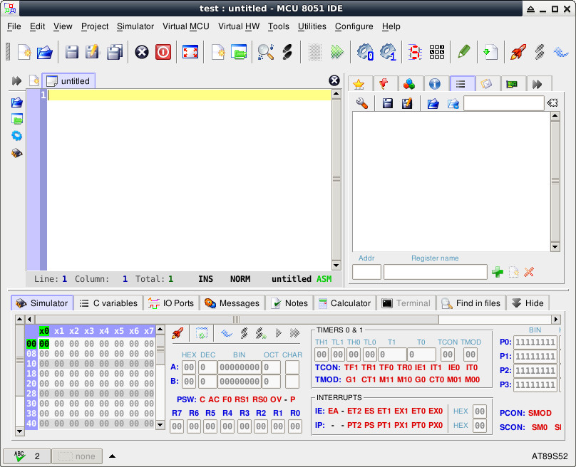
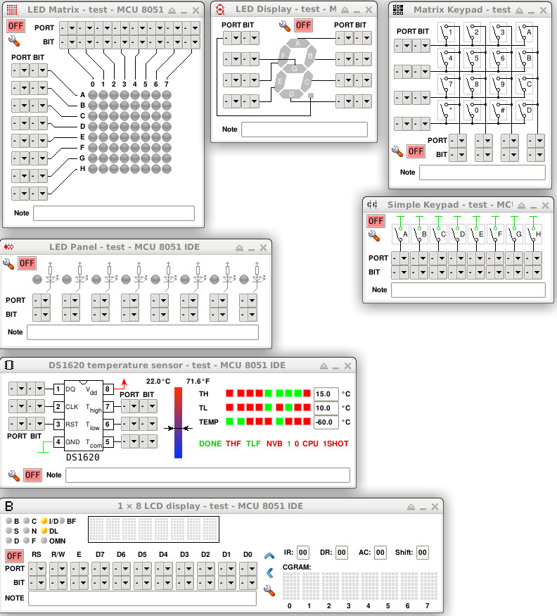

Steward
分享是一種喜悅、更是一種幸福
模擬器 - MCU 8051 IDE - 開發環境
MCU 8051 IDE是一款相當優秀的8051 IDE開源軟體，除了可以直接編譯Assembly之外，更支援SDCC以及ASEM-51編譯器，因此，可以在這個8051 IDE環境中撰寫Assembly、C語言程式，當然，司徒最愛的功能還是虛擬I/O，如：虛擬LED或者矩陣鍵盤，使用者可以透過這個IDE模擬硬體的狀況，因此，司徒相當推薦8051初學者使用這個IDE開發測試程式，如果在Debian環境下，直接使用如下指令安裝即可：
$ sudo apt-get install mcu8051ide
IDE介面

支援的虛擬I/O
